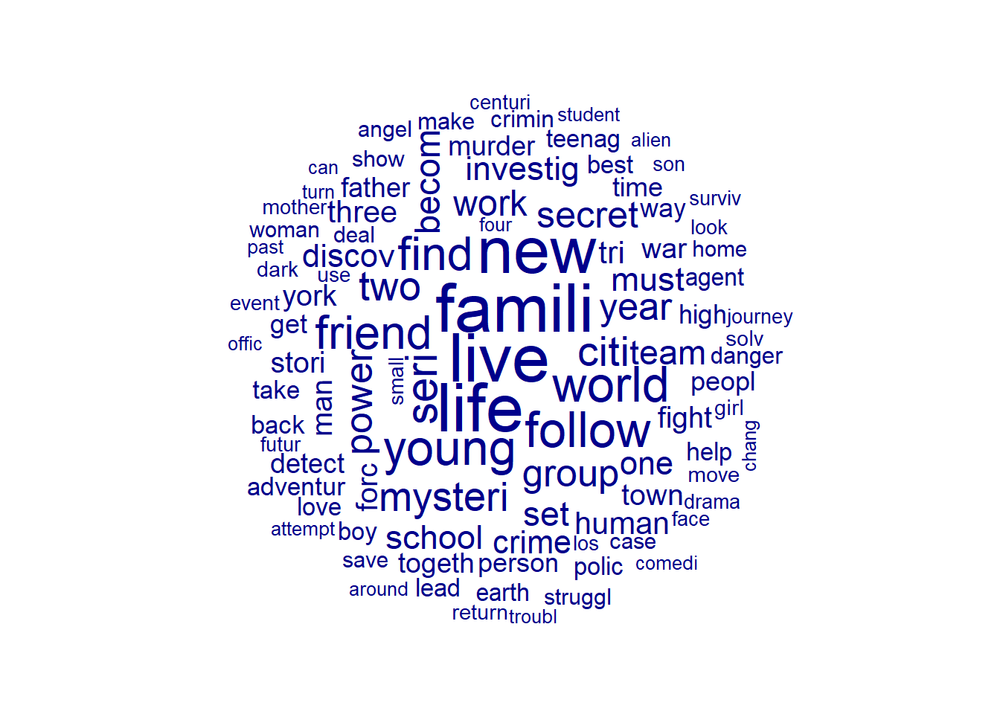

#install.packages("tidyverse)
#install.packages("quanteda")
#install.packages("quanteda.textplots")
#install.packages("RCurl")
library("tidyverse")
library("quanteda")
library("quanteda.textplots")
library("RCurl")Sitzung 1: Einführung & Preprocessing
1. Pakete laden und Daten einlesen
Zunächst installieren alle Pakete, die wir für diese Sitzung brauchten (z.B. tidyverse). Ihr braucht install.packages() nur, wenn ihr die Pakete im Methodencafe noch nicht installiert hattet.
1.1 Textdaten aus einer lokalen Datei einlesen
Zunächst könnt ihr die Text-Daten via der Tutorials-Webseite downloaden (s. “Materialien/Daten”).
Anschliessen laden wir die Dateien in R. Wenn ihr via JupyterHub arbeitet, geht das via Click-and-Point. Andernfalls nutzt den read.csv2()-Befehl. Der Datensatz wird im Objekt data gespeichert.
data <- read.csv2("data_tvseries.csv")1.2 Textdaten von einer URL downloaden
Oft wollen wir Dateien auch direkt von z. B. einer Webseite laden. Dafür nutzen wir die Funktion getURL() aus dem package Rcurl und dann wieder die read.csv2()-Funktion.
url <- getURL("https://raw.githubusercontent.com/valeriehase/textasdata-ms/main/data/data_tvseries.csv")
data <- read.csv2(text = url)Nach dem Einlesen der Daten verschaffen wir uns einen Überblick über die Daten und kontrollieren, dass alles korrekt eingelesen wurde.
head(data) Title Year Parental.Rating Rating Number.of.Votes
1 1. Game of Thrones 2011–2019 TV-MA 9.2 2.3M
2 2. Breaking Bad 2008–2013 TV-MA 9.5 2.1M
3 3. Stranger Things 2016–2025 TV-14 8.7 1.3M
4 4. Friends 1994–2004 TV-14 8.9 1.1M
5 5. The Walking Dead 2010–2022 TV-MA 8.1 1.1M
6 6. Sherlock 2010–2017 TV-14 9.1 1M
Description
1 Nine noble families fight for control over the lands of Westeros, while an ancient enemy returns after being dormant for millennia.
2 A chemistry teacher diagnosed with inoperable lung cancer turns to manufacturing and selling methamphetamine with a former student in order to secure his family's future.
3 When a young boy vanishes, a small town uncovers a mystery involving secret experiments, terrifying supernatural forces and one strange little girl.
4 Follows the personal and professional lives of six twenty to thirty year-old friends living in the Manhattan borough of New York City.
5 Sheriff Deputy Rick Grimes wakes up from a coma to learn the world is in ruins and must lead a group of survivors to stay alive.
6 The quirky spin on Conan Doyle's iconic sleuth pitches him as a "high-functioning sociopath" in modern-day London. Assisting him in his investigations: Afghanistan War vet John Watson, who's introduced to Holmes by a mutual acquaintance.Sieht soweit gut aus!
2. Preprocessing
2.1 Bereinigung (z. B. Encoding-Probleme)
Nach dem Einlesen haben wir bereits einen Blick in den Datensatz geworfen. Nun schauen wir uns gezielt die Variable Description an, um zu überprüfen, ob der zu analysierende Text gut aussieht. Hier nutzen wir slice(), um uns nur den allerersten Text ausgeben zu lassen.
data %>%
#Auswahl der Variable "Description"
select(Description) %>%
#Reduktion auf ersten Text
slice(1) Description
1 Nine noble families fight for control over the lands of Westeros, while an ancient enemy returns after being dormant for millennia.Der Text sieht gut aus! Allerdings kann es, gerade bei Texten aus anderen Sprachen, zu sogenannten Encoding-Problemen kommen.
2.1.1 Encoding-Probleme
Schauen wir uns ein Beispiel an: deutsche Umlaute. Was passiert wenn wir hier das Encoding ändern?
#Beispiel-Satz
string <- "Schöne Grüße aus München"
#Encoding prüfen
Encoding(string)[1] "UTF-8"#Encoding testweise ändern
Encoding(string) <- "latin1"
string[1] "Schöne Grüße aus München"Wie können wir Encoding-Probleme adressieren?
- Beim Einlesen das richtige Encoding als Argument mitgeben (siehe z.B.
fileEncoding-Argument inread.csv2()) - Mit Hilfe von regulären Ausdrücken bereinigen
Beim manuellen Bereinigen können reguläre Ausdrücke (mehr dazu hier) und die Funktion gsub() helfen, mit der wir Zeichen ersetzen können. Zum Beispiel so:
#Mit Hilfe von regulären Ausdrücken bereinigen
string %>%
#Ersatz für falsches Encoding "ö"
gsub(pattern = "ö", replacement ="ö") %>%
#Ersatz für falsches Encoding "ü"
gsub(pattern = "ü", replacement = "ü") %>%
#Ersatz für falsches Encoding "ß"
gsub(pattern = "ß", replacement = "ß") [1] "Schöne Grüße aus München"2.1.2 Datenbereinigung mit regulären Ausdrücken
Probieren wir dies für unseren Datensatz aus. Wir wollen die Nummer, den Punkt und das Leerzeichen vor dem Titel der TV-Serie in der Variable Title mit gsub() entfernen:
data %>%
select(Title) %>%
head(5) Title
1 1. Game of Thrones
2 2. Breaking Bad
3 3. Stranger Things
4 4. Friends
5 5. The Walking DeadDas ginge mit folgenden Befehlen:
#Entfernung der Zeichen vor dem Titel der TV-Serie
data <- data %>%
mutate(Title = gsub("^[0-9]+[[:punct:]] ", "", Title))
#So sieht das Ergebnis aus:
data %>%
select(Title) %>%
head(5) Title
1 Game of Thrones
2 Breaking Bad
3 Stranger Things
4 Friends
5 The Walking Dead2.1.3 Datenfilterung mit regulären Ausdrücken
Mit regulären Ausdrücken können wir aber noch mehr machen, z.B. Daten filtern. Wir wollen nur TV-Serien behalten, die als “Drama” klassifiziert wurden.
data %>%
# filtern aller TV_Serien, die "Drama" in der Beschreibung beinhalten
filter(grepl("[D|d]rama", Description)) %>%
# Inspektion der ersten fünf Titel
select(Title) %>%
head(5) Title
1 Black Mirror
2 The Lord of the Rings: The Rings of Power
3 Grey's Anatomy
4 Mad Men
5 Teen WolfUnd jetzt behalten wir solche, die als “Drama” oder “Crime” klassifiziert wurden.
data %>%
# filtern aller TV_Serien, die "Drama"und "Crime" in der Beschreibung beinhalten
filter(grepl("[D|d]rama|[C|c]rime", Description)) %>%
# Inspektion der ersten fünf Titel
select(Title) %>%
head(5) Title
1 Dexter
2 Black Mirror
3 Daredevil
4 The Flash
5 The Lord of the Rings: The Rings of Power2.1.4 Aufgabe 1 📌
Könnt ihr…
Basis: Alle Serien identifizieren, die in Deutschland spielen?
Fortgeschritten: Alle Serien identifizieren, in denen es um Superhelden geht und “superhero/superheroes” in der Variable
Descriptionmit “fancy R programmers“ ersetzen?
2.2 Normalisierung
Die Funktionen tokens() bzw. entsprechende Subfunktionen von quanteda ermöglichen es uns, mehrere Preprocessing-Schritte in einer einzigen Pipe (d.h. Analyse-Pipeline auf Basis des tidyverse) durchzuführen:
- Tokenisierung:
tokens()(hier können Tokenisierung anwenden, aber bereits auch Sonderzeichen, wie Satzzeichen, entfernen) - Kleinschreibung:
tokens_tolower() - Stoppwörter entfernen:
tokens_remove_stopwords(). - Stemming:
tokens_wordstem()
tokens <- tokens(data$Description,
what = "word", #Tokenisierung, hier zu Wörtern als Analyseeinheit
remove_punct = TRUE, #Entfernung von Satzzeichen
remove_numbers = TRUE) %>% #Entfernung von Zahlen
#Kleinschreibung
tokens_tolower() %>%
#Entfernung von Stoppwörtern
tokens_remove(stopwords("english")) %>%
#Stemming
tokens_wordstem()
#So sah unser erster Text vor dem Preprocessing aus
data$Description[1][1] "Nine noble families fight for control over the lands of Westeros, while an ancient enemy returns after being dormant for millennia."#Und so danach
tokens[1]Tokens consisting of 1 document.
text1 :
[1] "nine" "nobl" "famili" "fight" "control" "land"
[7] "westero" "ancient" "enemi" "return" "dormant" "millennia"2.2.1 Entfernung von Stoppwörtern
Es gibt verschiedene Möglichkeiten, Stoppwörter zu entfernen. Am einfachsten ist dies mithilfe der im quanteda-Paket integrierten Stoppwortlisten möglich. Diese sind in mehreren Sprachen verfügbar, darunter auch Deutsch.
Je nach Forschungsfrage können diese Stoppwortlisten angepasst werden, indem eigene Stoppwörter definiert und dann entfernt werden. Es ist aber auch möglich, eigene Stoppwortlisten zu erstellen.
#Wörter aus der quanteda Stoppwortliste entfernen
stoppwörter <- stopwords("english")
stoppwörter <- stoppwörter[!stoppwörter %in% c("i", "me")]
#Beispielhafte Anwendung
tokens(data$Description,
what = "word", #Tokenisierung, hier zu Wörtern als Analyseeinheit
remove_punct = TRUE, #Entfernung von Satzzeichen
remove_numbers = TRUE) %>% #Entfernung von Zahlen
#Kleinschreibung
tokens_tolower() %>%
#Entfernung von Stoppwörtern - hier z.B. reduzierte quanteda-Liste
tokens_remove(stoppwörter) %>%
#Stemming
tokens_wordstem() %>%
#Ausgabe des ersten Textes
head(1)Tokens consisting of 1 document.
text1 :
[1] "nine" "nobl" "famili" "fight" "control" "land"
[7] "westero" "ancient" "enemi" "return" "dormant" "millennia"2.2.2 Aufgabe 2 📌
Könnt ihr…
Basis: Eine Liste mit 3-5 Stopwörtern erstellen und diese als Teil des Preprocessings zusätzlich entfernen?
Fortgeschritten: Dafür sorgen, dass Namen von Städten (hier als Beispiel „New York“) als ein einzelnes Feature beibehalten werden?
3. Text-as-Data-Repräsentation
3.1 Erstellung einer DFM
Um aus unseren tokens eine Document-Feature-Matrix zu machen, damit der Computer “Text-as-Data”, d.h. als numerisches Datenformat, verarbeiten kann, nutzen wir die dfm()Funktion aus dem quanteda-Paket.
#Wir erstellen eine Document-Feature matrix
dfm <- tokens %>%
dfm()
#So sieht das Ergebnis aus
dfmDocument-feature matrix of: 900 documents, 4,246 features (99.66% sparse) and 0 docvars.
features
docs nine nobl famili fight control land westero ancient enemi return
text1 1 1 1 1 1 1 1 1 1 1
text2 0 0 1 0 0 0 0 0 0 0
text3 0 0 0 0 0 0 0 0 0 0
text4 0 0 0 0 0 0 0 0 0 0
text5 0 0 0 0 0 0 0 0 0 0
text6 0 0 0 0 0 0 0 0 0 0
[ reached max_ndoc ... 894 more documents, reached max_nfeat ... 4,236 more features ]Wir sehen:
- Die DFM besteht aus 900 Dokumenten.
- Die DFM hat nach dem Preprocessing immer noch 4,246 individuelle Features, hier Wörter.
- Die DFM ist 99.66% “spare”, d.h. mehr als 99% der Zellen enthalten eine 0, weil viele Features nur sehr selten vorkommen.
3.2 Zusätzliche Normalisierung: Relative Pruning
Im letzten Schritt des Preprocessings entfernen wir häufig und selten vorkommende Features aus der DFM. Das geht mit der Funktion dfm_trim()aus dem quanteda-Paket.
Es können unterschiedliche Grenzwerte gesetzt werden. Hier behalten wir nur Features, die in mindestens in 0.5% und höchstens in 99% der Dokumente vorkommen. Das Argument docfreq_type = "prop"berechnet den Anteil der Dokumente, die ein bestimmtes Feature beinhalten relativ zur Gesamtzahl der Dokumente. verbose = TRUEprinted während der Ausführung der Funktion Informationen über den Rechenvorgang in die Konsole.
#Anzahl Features vor relative pruning
dfmDocument-feature matrix of: 900 documents, 4,246 features (99.66% sparse) and 0 docvars.
features
docs nine nobl famili fight control land westero ancient enemi return
text1 1 1 1 1 1 1 1 1 1 1
text2 0 0 1 0 0 0 0 0 0 0
text3 0 0 0 0 0 0 0 0 0 0
text4 0 0 0 0 0 0 0 0 0 0
text5 0 0 0 0 0 0 0 0 0 0
text6 0 0 0 0 0 0 0 0 0 0
[ reached max_ndoc ... 894 more documents, reached max_nfeat ... 4,236 more features ]#Anwendung des relative pruning
dfm <- dfm %>%
dfm_trim( min_docfreq = 0.005,
max_docfreq = 0.99,
docfreq_type = "prop",
verbose = TRUE)
#Anzahl Features nach relative pruning
dfmDocument-feature matrix of: 900 documents, 605 features (98.58% sparse) and 0 docvars.
features
docs famili fight control land ancient enemi return turn former student
text1 1 1 1 1 1 1 1 0 0 0
text2 1 0 0 0 0 0 0 1 1 1
text3 0 0 0 0 0 0 0 0 0 0
text4 0 0 0 0 0 0 0 0 0 0
text5 0 0 0 0 0 0 0 0 0 0
text6 0 0 0 0 0 0 0 0 0 0
[ reached max_ndoc ... 894 more documents, reached max_nfeat ... 595 more features ]Wir sehen: Relative pruning kann unseren Datensatz noch einmal deutlich verkleinern (und damit z.B. Analysen beschleunigen): Wir haben nun 605 anstelle von 4,246 Features!
4. Erste Analysen
4.1 Top Features
Für einen ersten Einblick in die Daten lassen wir uns mit der topfeatures()-Funktion aus dem quanteda-Packet die zehn am häufigsten vorkommenden Features ausgeben.
topfeatures(dfm, 10) %>%
#Umwandlung in einen "schöneren" Dataframe mit der Spalte "Häufigkeit"
as.data.frame() %>%
rename("Häufigkeit" = '.') Häufigkeit
live 108
life 108
famili 107
new 103
young 74
follow 74
world 74
friend 70
find 69
seri 654.2. Die berühmt-berüchtigte Word Cloud
Das Ergebnis können wir mit einer Word Cloud visualisieren. Hierfür nutzen wir die textplot_wordcloud()Funktion aus dem quanteda.textplots-Paket. Dabei werden besonders “häufige” Features grösser dargestellt.
textplot_wordcloud(dfm, max_words = 100)